기뢰와 해협 (2) - 왜 이리 못 맞춰?
게시: 2026-03-23T06:30:19+09:00
<좋지 않은 출발> 일단 독일 측에 붙기로 했으니 오스만 투르크는 필요한 무기와 탄약, 기뢰 등을 독일로부터 공급받아야 했는데, 문제는 독일은 흑해는 물론, 지중해로도 나올 구석이 없는 발트해 국가라는 점. 그런 것을 생각한다면 아예 처음부터 독일 측에 불어서는 안 되는 것이었는데, 오스만 투르크나 독일이나 모두 생각해둔 바가 있었음. 독일과 동맹국(Central Powers)을 구성한 오스트리아-헝가리 제국이 바로 오스만 투르크 근처였으니, 독일로부터 오스트리아-헝가리를 거쳐 철도를 통해 공급을 받으면 된다는 것. 문제는 악마는 디테일에 있다고, 오스트리아-헝가리와 오스만 투르크는 지척이긴 하지만 그 사이에는 불가리아, 루마니아, 그리고 세르비아가 있었음. 이들의 도움을 받지 못하면 모든 계획이 허사. 게다가 세르비아는 WW1을 일으킨 장본인으로서 오스트리아-헝가리를 철천지 원수로 생각하는 나라.
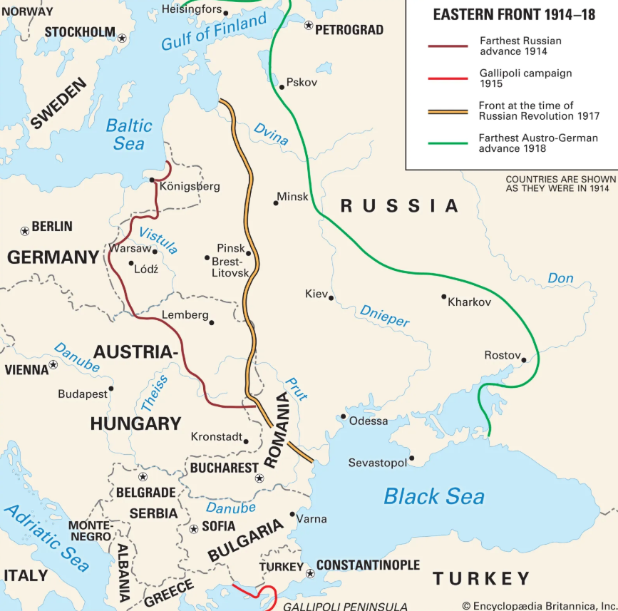
(이런 상황에서 무기는 독일에서 받아서 싸우겠다?) 그런데도 오스만 투르크가 '에라 모르겠다 지르고 본다'라며 전쟁에 뛰어든 것은 나름 합리적인 계산이 있었음. 어떤 측면으로 보나 오스트리아-헝가리와 세르비아의 싸움은 순식간에 오스트리아-헝가리의 승리로 끝날 것이므로 곧 뚫릴 것이며, 또 오스만 투르크가 동맹국 측에 가담한다면 오스트리아-헝가리와 오스만 투르크 사이에 끼인 신세가 되는 불가리아와 루마니아는 당연히 동맹국에 가담할 것이라는 것. 하지만 세상에 뜻대로 되는 것은 거의 없었음. 세르비아는 의외로 질기게 버티어 오스트리아-헝가리는 세르비아 통로를 전혀 뚫지 못했고, 그 삽질을 본 불가리아와 루마니아도 엄정 중립을 선언. 결과적으로 오스만 투르크는 독일로부터 무기와 탄약, 기뢰를 공급받을 길이 꽉 막혔음. 그래서 부랴부랴 재고 조사를 해보니, 다다넬즈 해협 요새들은 1번의 격렬한 포격전을 벌일 정도의 탄약 밖에 없었고, 기뢰도 매우 불충분한 숫자만 있어서 일단 해협 봉쇄는 가능했지만 연합군 함대가 소해 작업을 벌인다면 그걸 다시 막기 위해 추가로 부설할 기뢰가 별로 없었음.
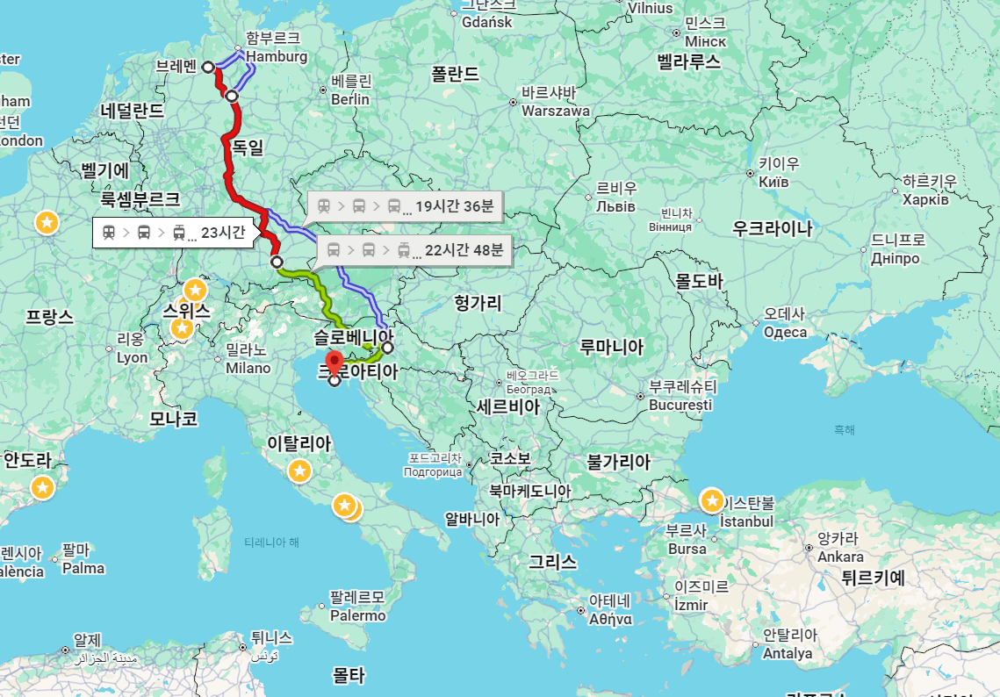
(결국 갈리폴리 전투때까지도 독일은 오스만 투르크에게 무기를 다량으로 공급할 방법을 찾지 못했음. 그러나 일부 물자는 당시 오스트리아 영토였던 크로아티아의 폴라(Pola, Pula) 항구로 보낸 뒤 거기서 야음을 틈타 어찌어찌 이스탄불로 보내기는 했음. 저 루트는 소형 잠수함인 UB-14를 분해하여 열차에 실어보낸 경로.)
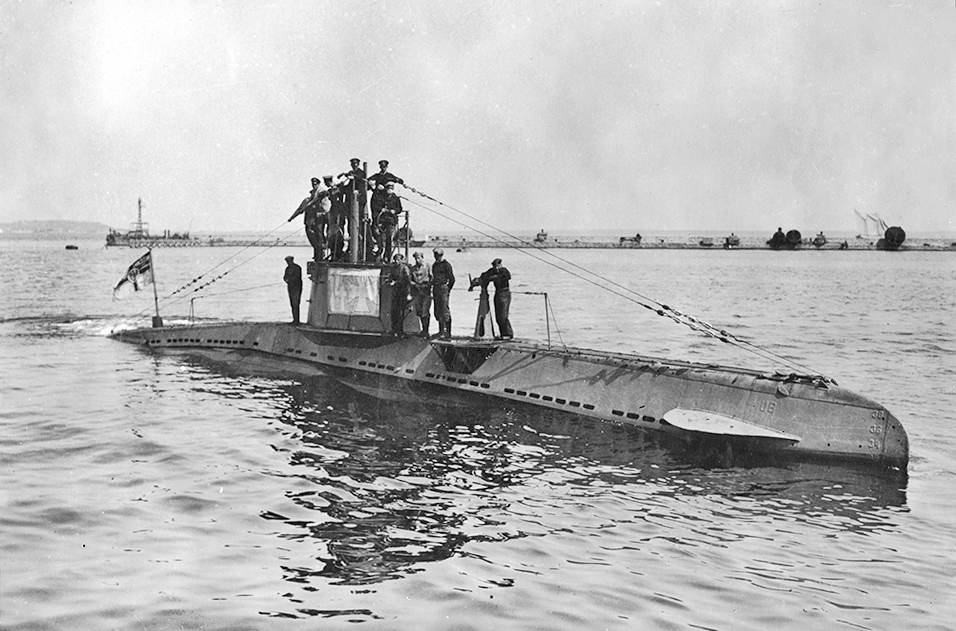
(독일의 미니 잠수함 UB-14. 130톤, 6.5노트. 부상한 상태로도 항속거리가 너무 짧아 폴라 항구에서 이스탄불로 직행할 수가 없었으므로, 풀라 항구에서 출발할 때는 연료를 아끼고자 오스트리아 구축함이 견인하여 나왔으며, 도중에 투르크의 소아시아 해안인 보드룸(Bodrum)에 들러 급유를 받아야 했음. 그렇지만 1만톤짜리 이탈리아 장갑순양함 아말피(Amalfi)와 1만1천톤짜리 캐나다 병력수송선 로열에드워드(Royal Edward)를 격침하는 등 에게해와 흑해에서 맹활약.)
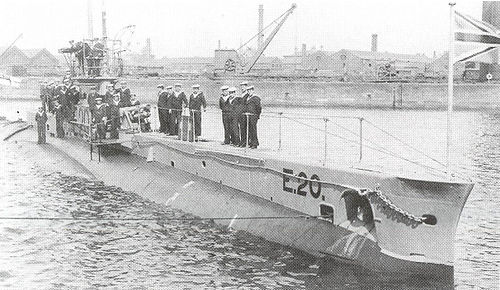
(UB-14는 심지어 다다넬즈 해협과 보스포러스 해협 사이의 마르마라 해에서 위 사진 속 700톤짜리 영국 잠수함 E20을 어뢰로 격침하기도 함. 다만 이건 첩보전의 승리. 어느 위치 어느 시간대에 영국 잠수함이 프랑스 잠수함과 랑데뷰할 것이라는 첩보를 미리 입수한 UB-14가, 마치 프랑스 잠수함인 척 접근하여 물 위에 떠서 기다리고 있던 E20을 500m 거리에서 어뢰 1방으로 격침한 사건.) <팔 길이가 다르다> 이런 상황에서 영불 연합 함대는 다다넬즈 해협의 방비 상태를 떠보기 위해, 다다넬즈 해협 입구 양쪽에 있는 오스만 투르크의 요새(...라고 쓰고 그냥 포대라고 읽음)들을 함포 사격으로 공격해봄. 그런데 이건 영국과 프랑스가 아직 오스만 투르크에게 정식 선전포고를 하기도 전인 1914년 11월 3일의 사건. 여기에 참여한 것은 영국 해군 순양전함 HMS Indomitable(2만톤, 25노트)과 HMS Indefatigable(1만8천톤, 25노트), 그리고 프랑스의 구식 전노급 전함들인 쉬프랑(Suffren, 1만3천톤, 17노트)과 베리테(Vérité, 1만5천톤, 18노트).
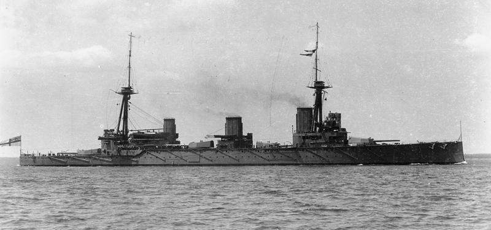
(HMS Indefatigable. 이 순양전함 인디패티거블은 1916년 유틀란트 해전에서 독일 순양전함 Von der Tann의 포격을 받고 탄약고 유폭으로 폭침.)
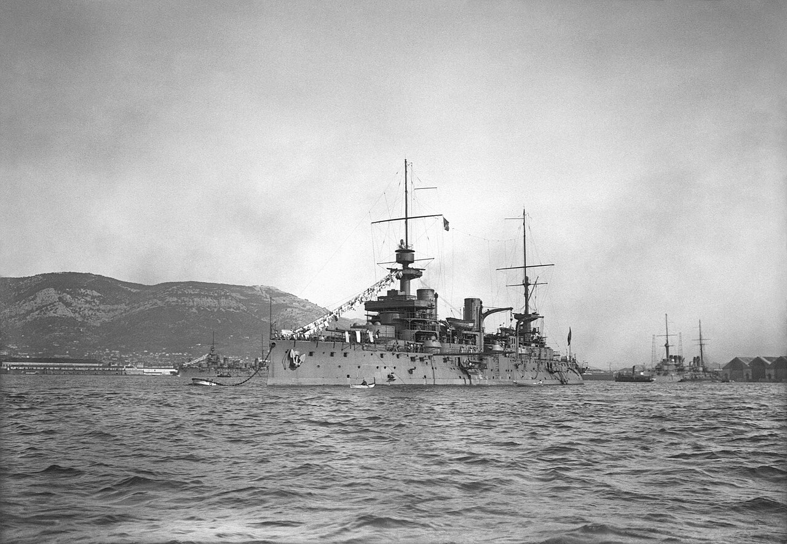
(프랑스 전노급 전함 Suffren. 구식 전함이긴 하지만 실은 1899년 진수되어 1904년 취역한 전함으로서, 연식은 그렇게까지 오래된 전함은 아니었음. 1916년 포르투갈 앞바다에서 독일 유보트 U-52의 어뢰 공격에 탄약고 유폭을 일으켜 폭침. 단 1명의 생존자 없이 648명의 승조원 전원 사망.) 이 네 척의 전함을 앞세운 총 10여 척의 영불 군함들이 다다넬즈 해협에 접근하여 16km 떨어진 곳에서 쿰칼레(Kum Kale)와 셋델바(Sedd el Bahr) 포대를 향해 포격을 시작. 그런데 이 두 곳에 배치된 대포들의 사정거리는 15km 이상 날아가는 것이 없었음. 이간 팔이 긴 헤비급 선수와 팔이 짧은 경량급 선수와의 권투 경기. 당연히 이 두 포대는 일방적으로 두들겨 맞기만 함. 그러다 재수가 없었던 건지 재수가 좋았던 것인지, 그렇게 원거리에서 쏘아대던 포탄 중 한 발이, 오스만 군이 부주의하게 저장해놓고 있던 오래된 흑색 화약 수백 kg이 보관된 얕은 셋델바 포대의 지하 탄약고에 명중. 당연히 대폭발이 일어나면서 80여명의 오스만 군 전멸. 이 폭발에는 양측이 모두 놀랐고, 영불 함대는 오스만 군을 더욱 우습게 여기게 됨.
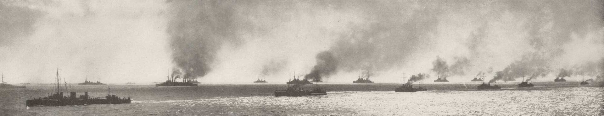
(다다넬즈 해협 앞에 몰려든 영국과 프랑스의 연합 함대. 해변의 오스만 포대에 배치된 병사들은 정말 무서웠을 듯.)
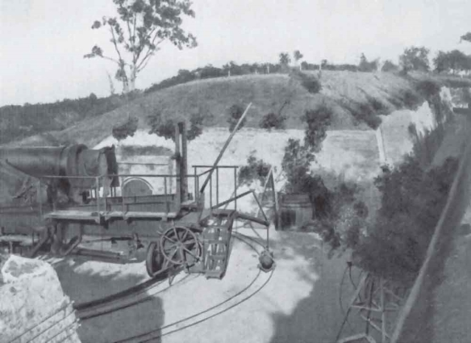
(당시 다다넬즈 해협을 지키던 오스만 투르크의 해안 포대의 모습)
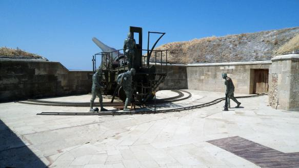
(이건 당시 포대를 재현해놓은 모습)
<드루와 드루와> 아무리 오스만 투르크 포대들이 허접해도, 다다넬즈 해협 안으로 들어가는 것은 또다른 문제. 영불 함대는 선듯 해협 안으로 들어가지는 못했고, 그게 현명했음. 당연히 오스만 해군은 해협 안쪽에 10줄의 기뢰들을 부설해놓았으며, 혹시라도 잠수함이 해협을 몰래 통과할까봐 어뢰 방어망까지 쳐놓음. 실제로 1915년 1월 15일에 프랑스 잠수함 사피르(Saphir)가 해협을 몰래 통과하다 어뢰 방어망에 걸려 어기적거리다가 해안 포대들의 포격을 받고 부상한 뒤 자침.
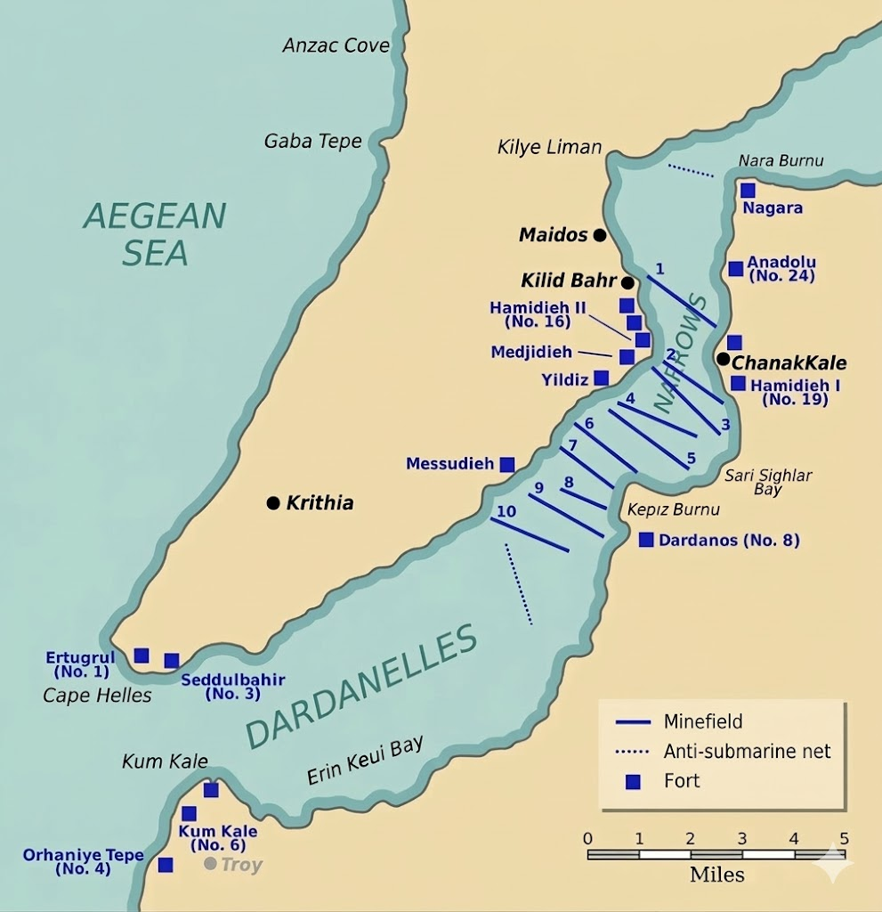
(당시 다다넬즈 해협에 설치된 기뢰들과 잠수함을 막기 위한 어뢰 방어망의 모습들.)
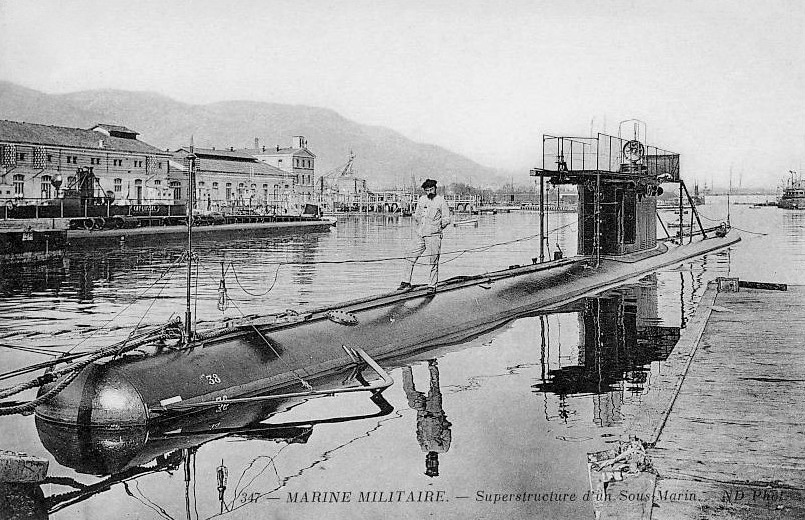
(프랑스 잠수함 Saphir. 400톤, 11노트. 29명 중에 14명만 헤엄을 쳐서 살아남아 포로가 되었고 함장을 포함한 나머지는 추운 바다에서 동사 및 익사.) 영불 연합군이 양측 해안에 지상군을 상륙시켜서 양쪽 해안의 포대를 먼저 제거한 뒤, 차근차근 기뢰를 제거하면서 전진한다면 기뢰 걱정은 크게 하지 않아도 되었음. 그러나 당장 서부 전선에 투입할 사단도 부족한 마당에 다다넬즈 해변에 투입할 지상군이 부족했으므로, 함대만으로 다다넬즈-보스포러스 해협을 돌파하기로 결정이 됨. 그래도 기뢰를 먼저 제거해야 돌파가 가능했고, 그러자면 소해정을 투입해야 하는데 양쪽 해안 포대들이 소해 작업을 보고만 있을 리가 없었음. 그러니까 먼저 영불 함대는 함포 사격을 통해 양쪽 해안 포대를 제거해야 했음. 영불 함대는 2월 19일부터 구축함 2척을 앞세워 최소한 해협 입구는 기뢰가 없는 안전 지대인지 조심스럽게 확인한 뒤, 전함들을 투입하여 해안 포대에 대해 포격을 시작. 그런데 작년 11월에 탄약고 유폭을 일으켰던 셋델바 포대의 경우는 역시나 그냥 운이 좋았던 것인지, 이번에는 전함들이 죽어라 포격을 해댔는데도 의외로 오스만 투르크의 해안 포대들의 피해는 그다지 크지 않았음. 가령 3월 7일, 마침내 최신예 전함인 HMS Queen Elizabeth까지 동원되어 그 15인치 주포 8문의 일제 사격을, 그것도 그 긴 사거리를 십분 활용하여 다다넬즈 해협의 반도 너머 에게해의 카바 테페(Kaba Tepe)에서 반도를 가로질러 쏘아댔으나, 효과가 없었음.
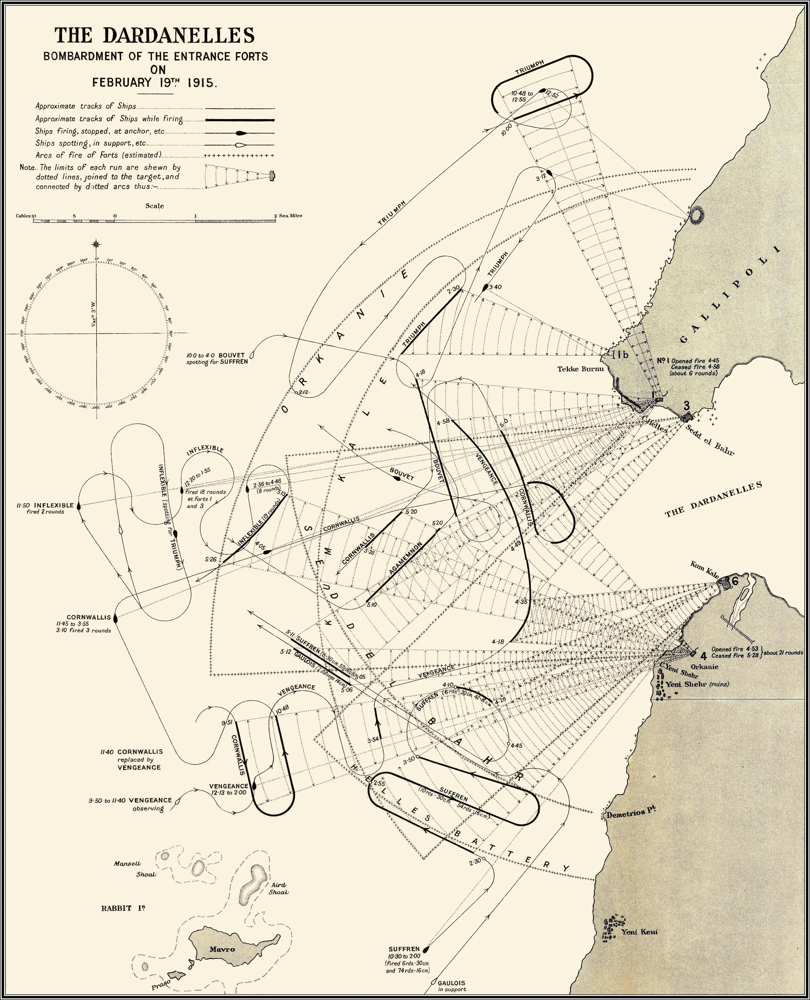
(1915년 2월 19일, 쿰칼레와 셋델바를 포격하는 영불 전함들의 항로. 굵은 선은 각 전함들이 포격을 하면서 움직인 구간.)
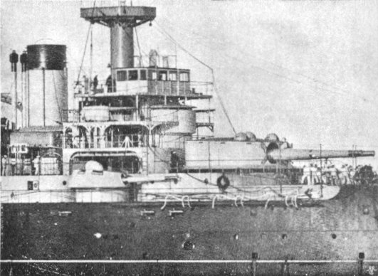
(이건 쉬프랑에 장착된 12인치 (305mm) 주포. 1893년에 개발된 대포라서 같은 12인치 포라고 해도, 1906년부터 사용된 영국제 12인치 주포에 비해 포구 속도도 780m/sec으로 더 느리고 앙각이 너무 낮다보니 최대 사거리도 12km로 상당히 짧았음. 왜 앙각을 그렇게 낮게 했을까? 19세기 말 기술로는 어차피 10km 이상 넘어가는 거리의 움직이는 표적은 맞추기 어려우므로 그 이상의 최대 사거리를 내는 것은 무의미하다고 보았기 때문. 앙각을 높게 하기 위해서는 포탑의 내부 공간을 크게 만들어야 했는데, 그러자면 포탑의 장갑 면적도 더 넓어져야 했고, 그렇게 되면 불필요하게 전함 중량이 더 무겁게 된다고 본 것.)
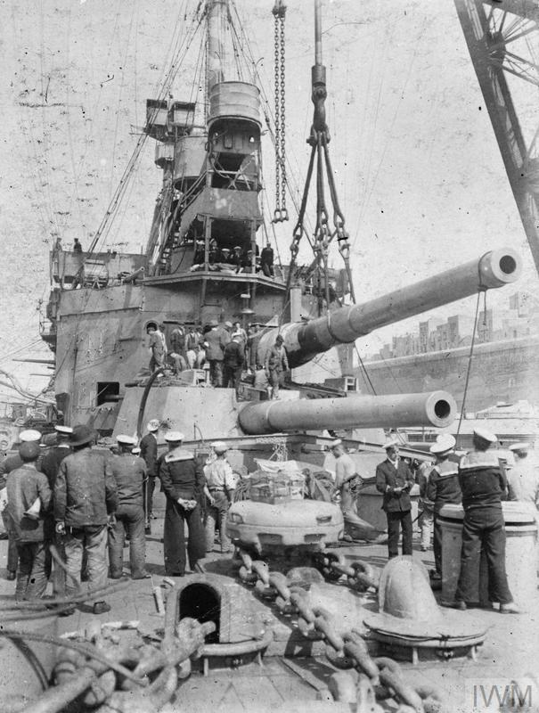
(이건 HMS Agamemnon에 장착되는 12인치 주포. 같은 12인치지만 1906년에 개발된 신형이라서, 포구 속도도 843m/sec으로 더 빠르고 최대 사거리는 22km에 달함.)
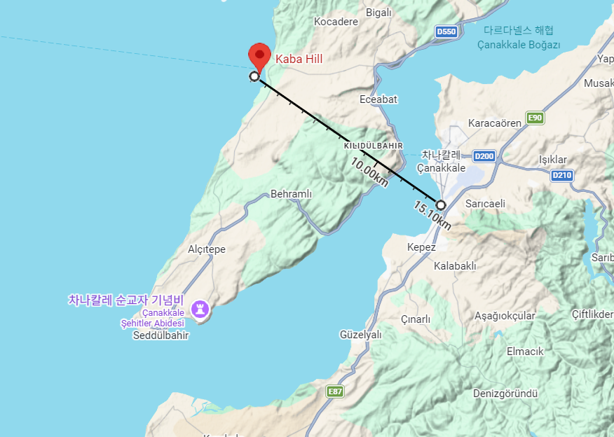
(HMS Queen Elizabeth가 처음 포격을 시작한 곳은 해협 바깥의 에게 해. 그 15인치 주포의 최대사거리는 30km가 넘었으므로 저기서 반도를 넘어 아시아쪽 차낙칼레 해변을 포격하는 것도 여유있게 가능. 탄착점 관측은 어떻게 했을까? 함재 수상비행기를 띄워 관측. 당시 정찰용 항공기에는 무전기가 있었을까? 사실상 없었고, 항공기에는 모르스 부호를 타전할 수 있는 무전 송신기만 있었음. 따라서 일방향으로 '너무 짧다' '너무 왼쪽' '너무 길다' 등의 간단한 보고만 할 수 있었음. 따라서 아주 정밀한 포격 유도는 어려웠음.)
이 모든 것은 WW1 당시의 진보된 기술이라는 것도 결국 중후장대한 기계류를 만들 수 있었을 뿐 반도체를 이용한 현대전의 정밀도에는 크게 미치지 못했기 때문. 어쩔 수 없이 퀸 엘리자베스를 포함한 전함들은 위험하더라도 다다넬즈 해협 안쪽에 들어와 최대한 근거리에서 눈으로 탄착점을 확인해가며 정밀 포격을 해야 했음. 그런데 역으로, 전함들이 자신있게 해협 안쪽으로 밀고 들어가려면 기뢰를 먼저 제거해야 했는데, 몇 주 동안이나 전함들이 포격을 해대며 엄호를 했는데도 소해정들의 기뢰 제거는 너무나 느리고 별 성과가 없었음. 대체 왜 그랬을까? 이건 당시 소해 방식과 상관 있었음.
** 말씀드린 대로 나폴레옹 이야기는 다음주에 계속 됩니다.